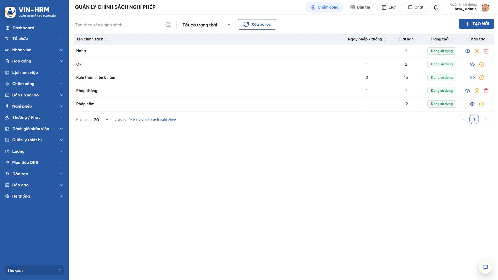
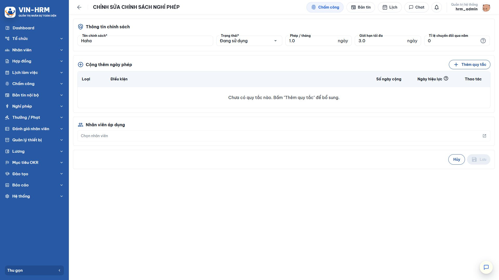
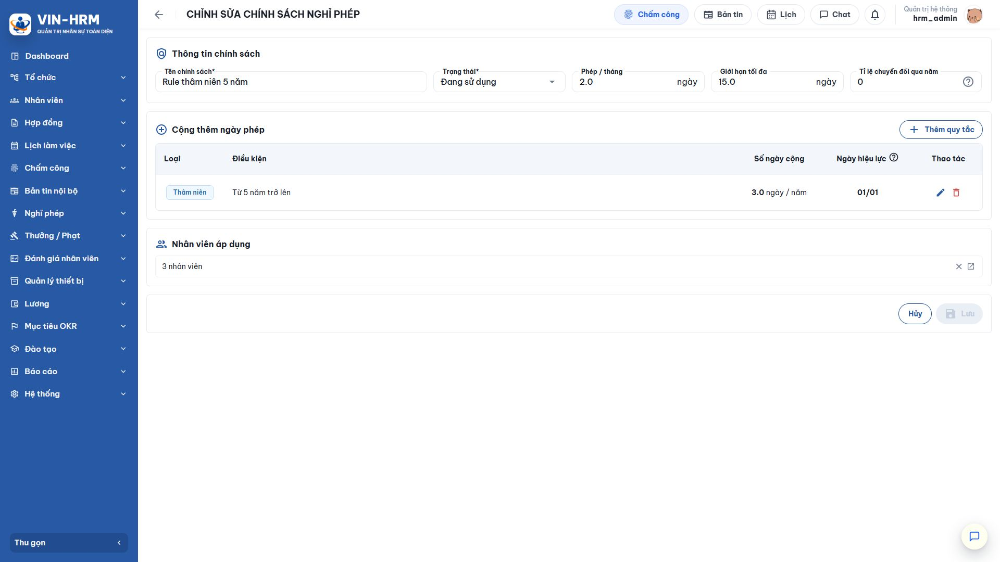
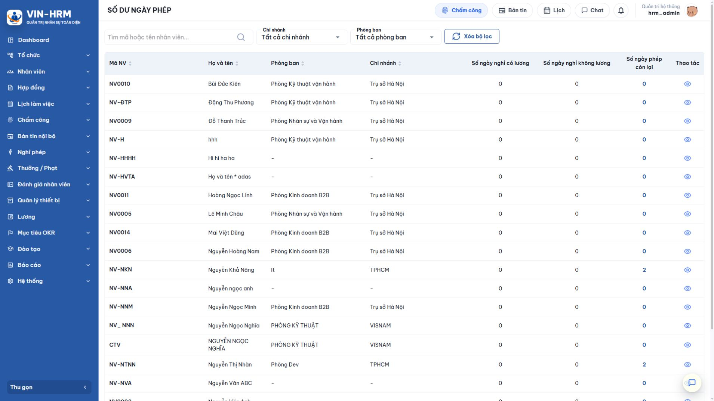

1. Mục đích và phạm vi
Chính sách nghỉ phép là bộ quy tắc quyết định nhân viên được cộng bao nhiêu ngày phép, được giữ tối đa bao nhiêu ngày, có được chuyển phép sang năm mới hay không và được cộng thêm theo thâm niên hoặc chức danh như thế nào. Số dư ngày phép không phải một con số nhập cố định; hệ thống tính số dư từ toàn bộ lịch sử cộng, trừ và điều chỉnh đã phát sinh.
Tài liệu hướng dẫn từ lúc tạo chính sách, giải thích từng lựa chọn, gán nhân viên, theo dõi tác vụ cộng phép tự động đến khi kiểm tra số dư và lịch sử. Phạm vi không bao gồm thao tác tạo đơn và phê duyệt đơn; hai nghiệp vụ đó được trình bày trong hai tài liệu riêng.
1.1. Luồng nghiệp vụ tổng quát
| 1. Thiết lập chính sách Khai báo phép mỗi tháng, giới hạn tối đa, tỷ lệ chuyển năm và quy tắc cộng thêm. |
| ↓ |
| 2. Áp dụng cho nhân viên Chọn nhân viên và ngày chính sách bắt đầu có hiệu lực đối với từng người. |
| ↓ |
| 3. Hệ thống phát sinh lịch sử cộng phép Cộng theo tháng; cộng thêm theo thâm niên/chức danh khi đến đúng ngày hiệu lực. |
| ↓ |
| 4. Phát sinh điều chỉnh số dư Trừ phép khi đơn nghỉ có lương được duyệt; ghi nhận phép đầu kỳ và chuyển phép qua năm. |
| ↓ |
| 5. Tính số dư hiện tại Tổng các dòng lịch sử hợp lệ và áp dụng giới hạn tối đa theo chính sách. |
| ↓ |
| 6. Tra cứu và đối soát Nhân sự xem số dư của nhân viên và mở lịch sử để giải thích từng biến động. |
1.2. Phân công trách nhiệm
| Vai trò | Trách nhiệm |
|---|---|
| Quản trị viên/nhân sự | Tạo và duy trì chính sách, xác định quy tắc cộng thêm, gán đúng nhân viên, kiểm tra lịch sử và xử lý sai lệch dữ liệu nguồn. |
| Người quản lý | Theo dõi số dư trong phạm vi được cấp quyền, phối hợp xác minh khi lịch làm việc, chức danh hoặc ngày vào làm chưa chính xác. |
| Nhân viên | Kiểm tra số dư trước khi gửi đơn nghỉ có lương và phản hồi cho nhân sự khi phát hiện sai lệch. |
| Hệ thống | Chạy tác vụ cộng phép, kiểm tra điều kiện, ghi lịch sử và tính số dư từ các biến động đã phát sinh. |
2. Điều kiện chuẩn bị và nguyên tắc quan trọng
2.1. Dữ liệu cần chuẩn bị
- Nhân viên đã có hồ sơ làm việc hợp lệ, đặc biệt là ngày vào làm, chức danh và trạng thái làm việc.
- Người thao tác được cấp quyền xem hoặc quản lý Chính sách nghỉ phép và dữ liệu nhân viên tương ứng.
- Doanh nghiệp đã thống nhất quy tắc phép: số phép mỗi tháng, mức trần, chuyển năm và các mức cộng thêm.
- Nếu dùng quy tắc theo chức danh, danh mục chức danh và thông tin công việc của nhân viên phải được cập nhật chính xác.
- Nếu cần ghi phép đầu kỳ, thực hiện tại hồ sơ nhân viên theo quyền và điều kiện mà hệ thống cho phép.
2.2. Các nguyên tắc phải nhớ
| Nguyên tắc | Giải thích |
|---|---|
| Mỗi nhân viên chỉ thuộc một chính sách tại một thời điểm | Khi nhân viên đã có chính sách khác, cần kiểm tra và kết thúc/chuyển chính sách đúng nghiệp vụ trước khi gán mới. |
| Chỉ chính sách đang sử dụng mới nhận nhân viên | Chính sách ngừng sử dụng được giữ để tra cứu nhưng không dùng để thêm đối tượng áp dụng mới. |
| Số dư được tính từ lịch sử | Muốn giải thích một con số, cần xem từng dòng cộng theo tháng, cộng thêm, trừ do nghỉ, phép đầu kỳ và chuyển năm. |
| Lịch sử trong phân hệ nghỉ phép không sửa trực tiếp | Cách làm này bảo đảm truy vết. Nếu dữ liệu nguồn sai, cần điều chỉnh tại đúng chức năng phát sinh hoặc hồ sơ nhân viên. |
| Quy tắc cộng thêm có ngày hiệu lực | Hệ thống chỉ kiểm tra vào đúng ngày/tháng được cấu hình. Nếu đã qua ngày mà dữ liệu chưa đủ điều kiện, hệ thống không tự truy cộng cho ngày đó. |
| Khuyến nghị trước khi áp dụng diện rộng Tạo chính sách thử nghiệm, gán cho một nhóm nhỏ và đối chiếu kết quả qua ít nhất một chu kỳ cộng phép. Sau khi xác nhận đúng mới gán toàn bộ nhân viên. |
3. Quản lý chính sách nghỉ phép
3.1. Mở danh sách
Mở Nghỉ phép > Chính sách nghỉ phép. Màn hình cho phép tìm theo tên chính sách, lọc trạng thái và mở chi tiết từng chính sách.

| Thông tin | Cách hiểu |
|---|---|
| Tên chính sách | Tên nghiệp vụ dễ nhận biết, ví dụ “Khối văn phòng”, “Thử việc”, “Khối vận hành”. Nên đặt tên phản ánh đúng nhóm nhân viên. |
| Trạng thái | Đang sử dụng: có thể áp dụng và tiếp tục phát sinh quyền lợi. Ngừng sử dụng: không thêm nhân viên mới; dữ liệu cũ vẫn được giữ. |
| Phép/tháng | Số ngày phép cơ bản được cộng cho mỗi tháng đủ điều kiện. |
| Giới hạn tối đa | Mức trần số dư được phép tích lũy theo chính sách. |
| Nhân viên áp dụng | Số người hiện được gắn với chính sách. Mở chi tiết để xem danh sách và ngày áp dụng. |
3.2. Tạo chính sách mới
- Chọn Thêm chính sách.
- Nhập tên dễ nhận biết và chọn trạng thái Đang sử dụng nếu chính sách sẵn sàng áp dụng.
- Nhập Phép/tháng, Giới hạn tối đa và Tỉ lệ chuyển đổi qua năm.
- Nếu có quyền lợi bổ sung, chọn Thêm quy tắc và khai báo theo thâm niên hoặc chức danh.
- Chọn nhân viên áp dụng hoặc lưu trước rồi bổ sung nhân viên tại trang chi tiết.
- Kiểm tra lại toàn bộ dữ liệu, sau đó chọn Lưu.

3.3. Sửa hoặc ngừng sử dụng
Mở chính sách cần thay đổi, cập nhật thông tin rồi lưu. Khi chính sách không còn áp dụng cho nhân viên mới, chuyển trạng thái sang Ngừng sử dụng. Trước khi thay đổi các con số có ảnh hưởng trực tiếp đến quyền lợi, cần xác định rõ thời điểm áp dụng và kiểm tra các lịch sử đã phát sinh; không nên sửa hồi tố nếu chưa có phương án đối soát.
4. Giải thích chi tiết các cấu hình
4.1. Thông tin chính sách
| Cấu hình | Ý nghĩa | Ví dụ và lưu ý |
|---|---|---|
| Tên chính sách | Tên quản trị để phân biệt nhóm chính sách. | Dùng “Phép khối văn phòng” rõ hơn “Chính sách 1”. Tên không quyết định cách tính; các trường số và quy tắc mới quyết định kết quả. |
| Trạng thái | Cho biết chính sách có đang được phép sử dụng hay không. | Đang sử dụng dùng cho chính sách hiện hành. Ngừng sử dụng dùng khi chỉ cần giữ lịch sử và không muốn gán thêm nhân viên. |
| Phép/tháng | Số ngày phép cơ bản hệ thống cộng theo tháng. | Nhập 1,0 nghĩa là mỗi tháng cộng 1 ngày; 1,5 nghĩa là cộng 1,5 ngày. Số lẻ được giữ để tính các đơn nghỉ một phần ngày. |
| Giới hạn tối đa | Mức trần tích lũy của số dư. | Nếu giới hạn là 15 ngày và trước kỳ cộng nhân viên đã có 14,5 ngày, lần cộng tiếp theo không được làm số dư vượt 15 ngày. |
| Tỉ lệ chuyển đổi qua năm | Quy định phép còn lại của năm cũ được chuyển sang năm mới theo tỷ lệ nào. | Xem ba lựa chọn chi tiết ở mục 4.2. Đây là phép toán chuyển đổi, không phải số ngày tối đa được chuyển. |
4.2. Ý nghĩa từng lựa chọn của Tỉ lệ chuyển đổi qua năm
| Giá trị | Ý nghĩa | Ví dụ |
|---|---|---|
| 0 | Không chuyển phép sang năm mới. | Cuối năm còn 6 ngày thì số phép được chuyển là 0; phần còn lại kết thúc theo quy định doanh nghiệp. |
| 1 | Chuyển nguyên tỷ lệ 1:1. | Cuối năm còn 6 ngày thì năm mới nhận 6 ngày chuyển sang, nhưng vẫn chịu giới hạn tối đa nếu chính sách có mức trần. |
| n lớn hơn 1 | Cứ n ngày cũ đổi thành 1 ngày mới. | Nếu nhập 2 và còn 5 ngày thì nhận 2 ngày; phần lẻ không đủ một đơn vị bị bỏ. Nếu nhập 3 và còn 8 ngày thì nhận 2 ngày. |
| Cách đọc đúng giá trị n Giá trị 2 không có nghĩa là chuyển gấp đôi. Nó có nghĩa “2 ngày cũ đổi 1 ngày mới”. Giá trị càng lớn thì số ngày được chuyển càng ít. |
4.3. Quy tắc cộng thêm ngày phép

| Thuộc tính | Ý nghĩa | Cách sử dụng |
|---|---|---|
| Loại: Thâm niên | Cộng thêm khi số năm làm việc của nhân viên đạt điều kiện. | Dùng cho quyền lợi tăng theo số năm phục vụ. Ngày vào làm trong hồ sơ nhân viên phải đúng. |
| Loại: Chức danh | Cộng thêm cho nhân viên đang giữ chức danh được cấu hình. | Dùng khi một số chức danh có chính sách phép riêng. Thông tin công việc và chức danh hiện hành phải chính xác. |
| Điều kiện | Mốc thâm niên hoặc chức danh cần thỏa mãn. | Ví dụ “Từ 5 năm trở lên” hoặc một chức danh cụ thể. |
| Số ngày cộng | Số ngày phép bổ sung phát sinh khi nhân viên đủ điều kiện. | Có thể là số nguyên hoặc số thập phân theo quy định doanh nghiệp. |
| Ngày hiệu lực | Ngày/tháng trong năm hệ thống kiểm tra và ghi quyền lợi bổ sung. | Nếu để trống theo quy tắc hệ thống, ngày/tháng vào làm của nhân viên được dùng làm mốc. Nếu khai báo 01/01, hệ thống kiểm tra vào ngày đầu năm. |
| Không tự truy cộng quy tắc đã lỡ ngày hiệu lực Quy tắc thâm niên/chức danh chỉ được đánh giá vào đúng ngày hiệu lực. Nếu đến ngày đó hồ sơ nhân viên còn sai hoặc quy tắc chưa hoạt động, việc sửa sau ngày hiệu lực không tự tạo lại quyền lợi cho thời điểm đã qua. |
5. Áp dụng chính sách cho nhân viên
5.1. Hai cách thực hiện
| Cách áp dụng | Khi nào nên dùng |
|---|---|
| Từ chi tiết chính sách | Phù hợp khi cần gán cùng một chính sách cho nhiều nhân viên. Mở khu vực Nhân viên áp dụng, chọn danh sách và khai báo ngày áp dụng. |
| Từ hồ sơ nhân viên | Phù hợp khi tiếp nhận hoặc điều chỉnh từng nhân viên. Mở thông tin công việc/quyền lợi của nhân viên và chọn chính sách nghỉ phép tương ứng. |
5.2. Các bước áp dụng từ chính sách
- Mở chính sách ở trạng thái Đang sử dụng.
- Tại Nhân viên áp dụng, mở danh sách chọn nhân viên.
- Chọn người cần áp dụng. Hệ thống loại trừ hoặc cảnh báo nhân viên đang thuộc chính sách khác.
- Nhập ngày áp dụng. Đây là mốc hệ thống bắt đầu xét cộng phép theo chính sách cho nhân viên.
- Lưu và kiểm tra lại số lượng nhân viên áp dụng.
| Ngày áp dụng ảnh hưởng kết quả cộng phép Không đặt ngày áp dụng sớm hơn thời điểm nhân viên thực sự hưởng chính sách nếu chưa có chủ trương truy cộng. Tác vụ tháng có thể tạo bù các kỳ còn thiếu kể từ ngày chính sách có hiệu lực với nhân viên. |
6. Cơ chế cộng, trừ và chuyển số dư
6.1. Cộng phép theo tháng
Tác vụ cộng phép theo tháng được hệ thống kiểm tra hằng ngày lúc 00:00. Đối với nhân viên đang áp dụng chính sách, hệ thống tìm các kỳ tháng còn thiếu kể từ ngày chính sách có hiệu lực và tạo lịch sử cộng phép. Nhờ cơ chế này, nếu tác vụ bị gián đoạn tạm thời, hệ thống có thể bổ sung các kỳ tháng còn thiếu khi chạy lại.
6.2. Cộng thêm theo thâm niên hoặc chức danh
Khác với cộng phép tháng, quy tắc cộng thêm chỉ được đánh giá vào ngày/tháng hiệu lực. Hệ thống kiểm tra nhân viên có thỏa điều kiện ở thời điểm đó hay không, sau đó ghi một dòng lịch sử cộng thêm. Không có cơ chế tự truy bù nếu ngày hiệu lực đã đi qua.
6.3. Trừ phép khi đơn được duyệt
Khi đơn Nghỉ có lương hoàn tất bước duyệt cuối cùng, hệ thống trừ số ngày tương ứng và ghi lịch sử khấu trừ. Đơn Nghỉ không lương không làm giảm số dư phép. Đơn chờ duyệt hoặc bị từ chối chưa tạo biến động trừ phép.
6.4. Phép đầu kỳ và chuyển qua năm
Phép đầu kỳ dùng khi doanh nghiệp đưa số dư trước đó vào hệ thống. Giá trị này được điều chỉnh tại hồ sơ nhân viên theo quyền và điều kiện cho phép. Chuyển phép qua năm được tạo theo tỷ lệ đã cấu hình và trở thành một dòng lịch sử riêng để đối soát.
6.5. Luồng tính số dư
| Phép đầu kỳ + Cộng theo tháng + Cộng thâm niên/chức danh + Chuyển năm |
| ↓ |
| Trừ các đơn nghỉ có lương đã duyệt và các điều chỉnh giảm hợp lệ |
| ↓ |
| Áp dụng giới hạn tối đa của chính sách |
| ↓ |
| Số dư ngày phép hiện tại Được hiển thị cho nhân sự và dùng để kiểm tra khi đăng ký nghỉ có lương. |
6.6. Các loại lịch sử có thể gặp
| Loại lịch sử | Ý nghĩa |
|---|---|
| Cộng theo tháng | Quyền lợi cơ bản được tạo định kỳ theo mức Phép/tháng. |
| Cộng thâm niên | Quyền lợi thêm khi nhân viên đạt mốc số năm làm việc. |
| Cộng theo chức danh | Quyền lợi thêm do chức danh hiện hành thỏa điều kiện. |
| Khấu trừ | Số phép bị trừ, thường phát sinh khi đơn nghỉ có lương được duyệt cuối. |
| Chuyển qua năm | Số phép từ năm cũ được quy đổi và đưa sang năm mới. |
| Phép đầu kỳ | Số dư ban đầu được đưa vào hệ thống để tiếp tục theo dõi. |
7. Tra cứu số dư và lịch sử ngày phép
7.1. Xem danh sách số dư
Mở Nghỉ phép > Số dư ngày phép. Sử dụng ô tìm kiếm và các bộ lọc tổ chức để thu hẹp danh sách. Màn hình hỗ trợ kiểm tra nhanh nhân viên, chính sách đang áp dụng, số dư và các thông tin liên quan.

7.2. Cách đối soát khi số dư chưa đúng kỳ vọng
- Xác nhận nhân viên đang thuộc đúng chính sách và chính sách đang sử dụng.
- Kiểm tra ngày áp dụng chính sách so với ngày vào làm và thời điểm bắt đầu hưởng quyền lợi.
- Đối chiếu phép/tháng, mức trần và tỷ lệ chuyển năm.
- Mở lịch sử, cộng tổng các dòng tăng và trừ các dòng giảm.
- Kiểm tra đơn nghỉ có lương đã duyệt và số ngày quy đổi từ số giờ nghỉ.
- Nếu thiếu cộng thâm niên/chức danh, kiểm tra ngày hiệu lực và dữ liệu nhân viên tại đúng ngày đó.
- Chỉ điều chỉnh ở chức năng nguồn; không sửa trực tiếp dòng lịch sử trong phân hệ nghỉ phép.
8. Lỗi thường gặp và danh sách kiểm tra
8.1. Tình huống thường gặp
| Hiện tượng | Nguyên nhân thường gặp | Cách xử lý |
|---|---|---|
| Không thêm được nhân viên | Nhân viên đã thuộc chính sách khác hoặc chính sách đang ngừng sử dụng. | Kiểm tra chính sách hiện tại của nhân viên; chuyển đúng nghiệp vụ hoặc kích hoạt lại chính sách nếu được phép. |
| Không thấy phép tháng | Ngày áp dụng chưa đến, tác vụ chưa chạy hoặc mức trần đã đạt. | Kiểm tra ngày hiệu lực, lịch sử kỳ gần nhất và giới hạn tối đa; theo dõi tác vụ tự động. |
| Thiếu phép thâm niên | Ngày hiệu lực đã qua khi dữ liệu chưa thỏa điều kiện. | Đối chiếu ngày vào làm và mốc hiệu lực; xử lý điều chỉnh theo quy trình nội bộ vì hệ thống không tự truy cộng. |
| Số dư thấp hơn dự kiến | Có đơn nghỉ có lương đã duyệt, tỷ lệ chuyển năm làm giảm phép hoặc số dư bị khống chế. | Mở lịch sử để xác định đúng dòng phát sinh; kiểm tra đơn liên quan và chính sách. |
| Số dư không khớp phép/tháng nhân số tháng | Có phép đầu kỳ, chuyển năm, cộng thêm, khấu trừ hoặc đạt trần. | Không tính chỉ từ số tháng; phải đối chiếu toàn bộ lịch sử. |
8.2. Danh sách kiểm tra trước khi đưa vào sử dụng
- □ Tên chính sách phản ánh đúng nhóm nhân viên.
- □ Trạng thái, phép/tháng và giới hạn tối đa đã được phê duyệt nội bộ.
- □ Tỉ lệ chuyển đổi qua năm đã được hiểu đúng theo công thức 0, 1 hoặc n đổi 1.
- □ Các quy tắc thâm niên/chức danh có đúng điều kiện, số ngày và ngày hiệu lực.
- □ Nhân viên áp dụng không trùng chính sách và có ngày áp dụng chính xác.
- □ Đã kiểm thử cộng phép và đối chiếu lịch sử trên một nhóm nhỏ.
- □ Nhân sự biết cách tra cứu số dư và xác định dòng lịch sử gây chênh lệch.